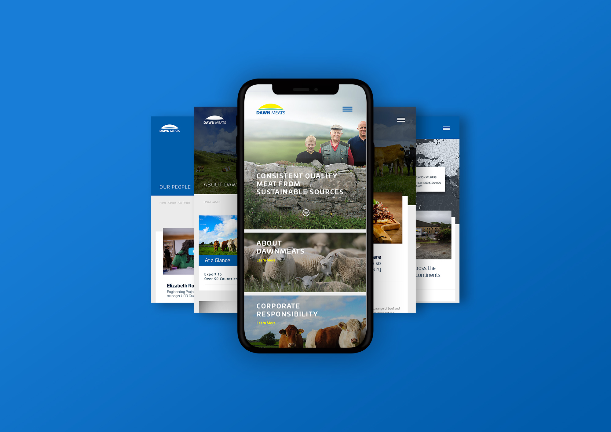
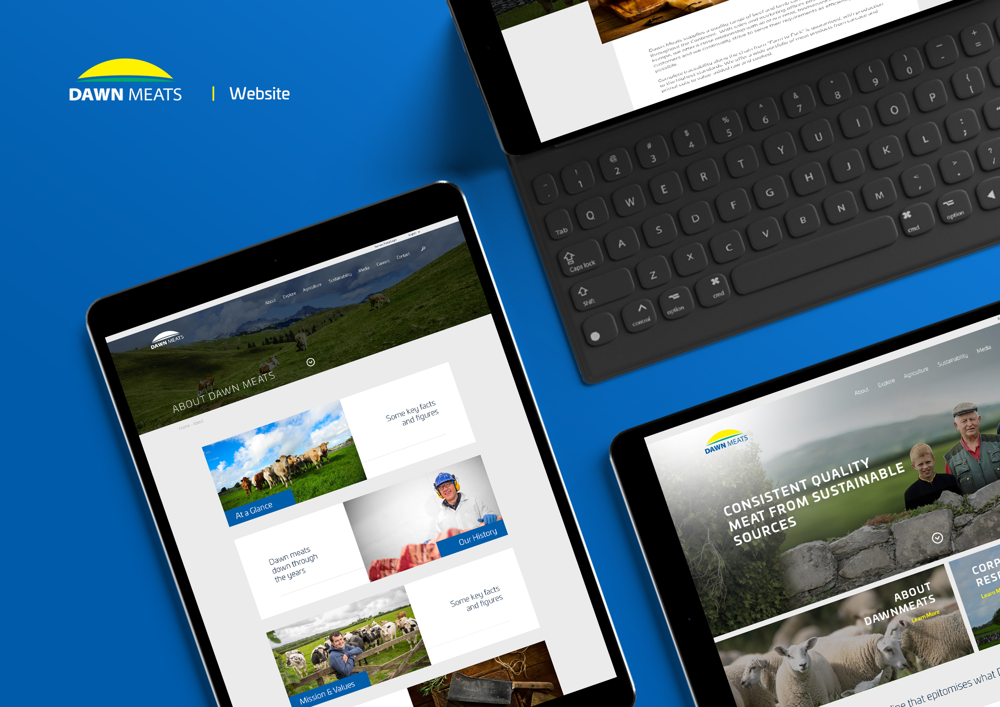
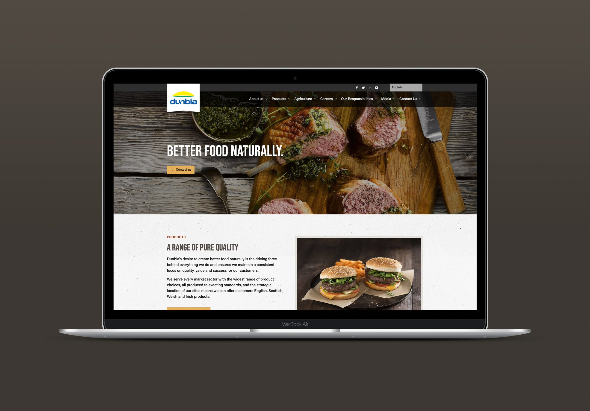
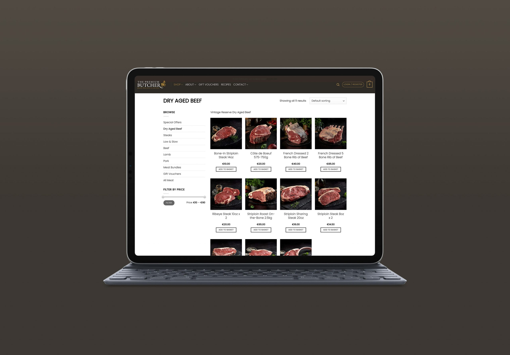

Dawn Meats Group
Premium Meats, Delivered Digitally
Dawn Meats Group are market leaders in food processing with over 40 years of heritage, supplying customers in more than 50 countries. When Covid closed the hospitality sector, their retail brand The Premium Butcher needed to bring restaurant-quality meat direct to Irish households. Fast. I redesigned the brand's online presence and e-commerce platform.
Dawn Meats Group are market leaders in food processing with over 40 years of heritage, supplying customers in more than 50 countries. When Covid closed the hospitality sector, their retail brand The Premium Butcher needed to bring restaurant-quality meat direct to Irish households. Fast. I redesigned the brand's online presence and e-commerce platform.

A fresh look for an established name
Having previously designed the Dawn Meats portal and the Dunbia online presence, I understood how the group builds its brands internationally. I researched the needs of existing and target customers, then modernised The Premium Butcher's identity online with tailor-made imagery, new photography and graphics.

Designed for conversion
The platform is a distinctive, interactive e-commerce experience focused squarely on selling and delivering premium meat. Every section is clearly defined, the user journey mapped end to end, and common flows tuned for a seamless purchase, supported by SEO, social optimisation, digital advertising in static and video formats, and ongoing maintenance.

Results
Website traffic increased 300% over the following two years with a 40% lower bounce rate, and online orders grew by over 500% in the six months after launch. The client put it simply: the new identity and website look great, and the effect on the online business has been massive.
